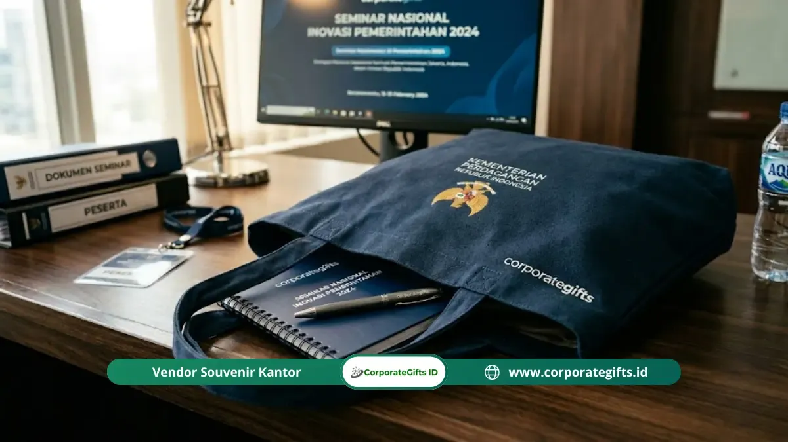

Corporate Gifts ID - Isi goodie bag seminar pemerintah yang tepat dan efisien mencakup tas seminar berlogo, alat tulis, blocknote, materi kegiatan, dan identitas peserta yang relevan dengan tujuan acara resmi instansi. Setiap komponen dikurasi secara fungsional untuk memenuhi standar akuntabilitas belanja instansi kementerian dan kedinasan daerah.
Poin Kunci Goodie Bag Seminar Pemerintah:
- Komponen Inti: Tas berlogo, pulpen fungsional, buku catatan (blocknote A5), materi panduan cetak, dan tanda pengenal (lanyard/ID card).
- Kesesuaian Anggaran: Isi paket disesuaikan dengan jenis kegiatan, durasi, dan Standar Biaya Masukan (SBM) yang berlaku.
- Efisiensi Akuntabel: Menghindari barang mewah atau item tidak relevan agar laporan pertanggungjawaban (LPJ) lancar dan transparan.
- Branding Kelembagaan: Minimal mencantumkan logo instansi pada tas dan sampul buku untuk memperkuat identitas resmi.
- Administrasi Rapi: Dokumentasi tanda terima fisik oleh peserta adalah kewajiban mutlak saat pembagian perlengkapan.
Menentukan isi goodie bag seminar pemerintah bukan sekadar urusan estetika atau membagikan bingkisan seremonial. Di lingkungan instansi kementerian, dinas pemerintah daerah, maupun lembaga negara, setiap item yang dimasukkan harus dapat dipertanggungjawabkan secara anggaran, relevan dengan tujuan kegiatan, dan memberikan manfaat nyata bagi peserta.
Apa Saja Komponen Wajib dalam Goodie Bag Seminar Pemerintah?
Komponen wajib goodie bag seminar pemerintah terdiri dari tas seminar, pulpen, buku catatan, materi kegiatan cetak, dan name tag atau identitas peserta:
1. Tas Seminar (Wadah Utama & Identitas)
Tas adalah wadah utama sekaligus media identitas visual instansi. Jenis tas yang paling umum digunakan dalam kegiatan pemerintah adalah:
- Tas Non-Woven (Spunbond): Dipilih karena harganya ekonomis, ringan, dan mudah dicetak logo dengan sablon satu warna. Cocok untuk kegiatan sosialisasi massal dengan ribuan peserta.
- Tas Kanvas / Blacu: Memberikan kesan lebih kokoh, elegan, dan tahan lama. Umumnya dipilih untuk seminar nasional, peluncuran program strategis, atau kegiatan yang melibatkan pimpinan instansi pusat.
- Tas Polyester dengan Resleting: Menawarkan keamanan dokumen yang prima dengan kompartemen luas. Sangat cocok untuk bimbingan teknis (bimtek) atau pelatihan multi-hari yang memerlukan peserta membawa banyak dokumen dan perangkat laptop.
Ukuran tas yang paling lazim adalah A4 atau sedikit lebih besar agar dapat memuat dokumen tanpa terlipat.
2. Alat Tulis Fungsional
Pulpen adalah perlengkapan yang paling sering digunakan peserta selama seminar berlangsung. Standar minimum adalah satu pulpen berkualitas per peserta. Beberapa instansi menambahkan pensil mekanik atau stabilo untuk kegiatan yang memerlukan penelaahan draf regulasi tebal. Pulpen berlogo instansi menambah kesan kelembagaan yang positif.
3. Buku Catatan atau Blocknote
Blocknote ukuran A5 adalah pilihan standar untuk seminar kit pemerintah. Halaman kosong yang cukup membantu peserta mencatat informasi penting tanpa perlu membawa buku sendiri. Cover blocknote dicetak dengan logo instansi, tema kegiatan, dan tanggal penyelenggaraan sebagai kenang-kenangan yang bernilai dokumentatif.
4. Materi Seminar & Modul Panduan
Materi seminar berupa modul, booklet kebijakan, presentasi yang dicetak, atau panduan teknis adalah komponen dengan nilai substantif tertinggi. Item ini langsung mendukung tujuan utama kegiatan. Materi sebaiknya disatukan dalam map atau folder berlogo instansi agar terorganisasi dengan baik dan rapi.
5. Tanda Pengenal & Lanyard Peserta
Name tag dengan tali lanyard kustom hampir selalu disertakan. Name tag yang disiapkan sebelumnya memperlancar registrasi dan memudahkan fasilitator mengenali peserta. Lanyard berlogo instansi juga berfungsi ganda sebagai cinderamata yang fungsional untuk penggunaan harian.

Kombinasi perlengkapan seminar kit instansi pemerintah: tas kanvas, blocknote A5, pulpen, lanyard, dan materi teknis.
Bagaimana Menyesuaikan Isi Goodie Bag dengan Jenis Kegiatan?
Isi goodie bag seminar disesuaikan dengan durasi, skala, dan tujuan kegiatan, di mana seminar multi-hari memerlukan item tambahan dibanding rapat setengah hari:
- Rapat Koordinasi Singkat (Setengah Hari): Cukup menggunakan paket minimalis: tas spunbond, pulpen, blocknote, dan materi rapat. Souvenir berlebih tidak disarankan agar tidak menimbulkan pertanyaan audit anggaran.
- Bimbingan Teknis Satu Hari Penuh: Dapat ditambahkan tumbler stainless atau botol minum higienis berlogo instansi untuk mendukung pengurangan sampah plastik dan menjaga hidrasi peserta sepanjang sesi.
- Seminar Nasional & Konferensi Multi-Hari: Memiliki ruang alokasi lebih leluasa untuk tote bag kanvas berkualitas, buku referensi, flashdisk OTG kompilasi materi, atau cinderamata khas daerah.
- Pelatihan Teknis dengan Praktik Lapangan: Memerlukan perlengkapan kerja praktis seperti papan dada (clipboard), topi dinas bordir, atau peta wilayah instruksi lapangan.
Tabel Rekomendasi Isi Paket Berdasarkan Skala Acara
Berikut matriks komposisi goodie bag instansi pemerintah agar efisien dari sisi biaya dan tepat guna secara operasional:
| Jenis Kegiatan | Komposisi Item Utama | Rekomendasi Bahan Tas | Estimasi Waktu Produksi |
|---|---|---|---|
| Rakor & Sosialisasi (Setengah Hari) | Pulpen sablon, blocknote A5 tipis, folder materi, name tag kertas | Spunbond 75 gsm / Paper bag laminasi | 3 - 5 Hari Kerja |
| Bimtek & Workshop (1 - 3 Hari) | Pulpen gel berlogo, blocknote tebal spiral, lanyard sablon, tumbler botol minum | Kanvas blacu / D300 jinjing resleting | 5 - 7 Hari Kerja |
| Seminar Nasional / Konferensi | Pulpen premium, agenda hard cover, flashdisk OTG materi, lanyard tenun, tumbler suhu | Tote bag kanvas premium / Ransel laptop seminar | 7 - 12 Hari Kerja |
| Pelatihan Lapangan & Vokasi | Pulpen tahan air, papan dada (clipboard), buku saku modul, topi bordir dinas | Tas selempang polyester anti-air | 7 - 10 Hari Kerja |
Item Apa yang Sebaiknya Dihindari dalam Goodie Bag Pemerintah?
Goodie bag seminar pemerintah sebaiknya tidak memuat barang mewah, item tidak relevan dengan kegiatan, atau produk yang nilainya tidak proporsional dengan anggaran yang disetujui:
- Barang Bernilai Tinggi yang Tidak Relevan: Aksesori mewah, smartwatch mahal, atau perlengkapan fesyen tanpa kaitan langsung dengan tema kegiatan dapat menimbulkan temuan pemeriksaan oleh auditor.
- Produk Makanan Basah yang Dicampur: Snack box atau minuman botol sebaiknya disediakan terpisah di konter konsumsi agar dokumen cetak di dalam tas tidak kotor atau lembap.
- Barang yang Mudah Rusak atau Tidak Fungsional: Pernak-pernik pajangan yang tidak memiliki fungsi praktis sebaiknya dihindari demi memastikan efisiensi anggaran negara.
- Materi Promosi Pihak Ketiga: Brosur komersial swasta tanpa kaitan resmi dilarang diselipkan agar tidak menimbulkan potensi konflik kepentingan kelembagaan.
Apakah Logo Instansi Wajib Dicantumkan di Goodie Bag?
Tidak ada kewajiban hukum mutlak, namun pencantuman logo instansi pada tas dan minimal satu item pelengkap adalah praktik standar keprotokolan yang memperkuat identitas penyelenggara secara kelembagaan:
- Mempermudah Identifikasi: Membantu peserta mengenali perlengkapan resmi dari penyelenggara.
- Meningkatkan Citra Profesional: Mempertegas kredibilitas dan kesiapan tata kelola instansi pemerintah.
- Dokumentasi Visual Kegiatan: Berfungsi sebagai bukti fisik visual yang dapat digunakan dalam laporan tahunan atau materi publikasi resmi.
Pertanyaan Umum Seputar Goodie Bag Pemerintah (FAQ)
Kesimpulan dan Langkah Pengadaan
Isi goodie bag seminar pemerintah yang tepat adalah paket yang relevan dengan kegiatan, proporsional dengan anggaran, dan mudah dipertanggungjawabkan dalam laporan pertanggungjawaban (LPJ).
Mulai dari tas hingga alat tulis, setiap item sebaiknya dipilih berdasarkan fungsi, bukan kesan mewah semata. Percayakan kebutuhan goodie bag seminar instansi Anda bersama CorporateGifts.ID melalui katalog produk resmi kami atau ajukan estimasi anggaran melalui formulir penawaran resmi.